Open source · Self-hosted · MIT licensed
A civic newsroom you run yourself.
TownReporter watches your town’s public record: meetings, packets, minutes, money and contracts. It turns what it finds into leads and drafts for an editor. A person reads every ordinary story and presses Publish.
Built for a town that needs coverage and has one editor, not a newsroom. The working edition watches Longmont, Colorado.
The public record is only the beginning.
Repository release: 0.6.86, released October 28, 2026. Release notes · Changelog · GitHub
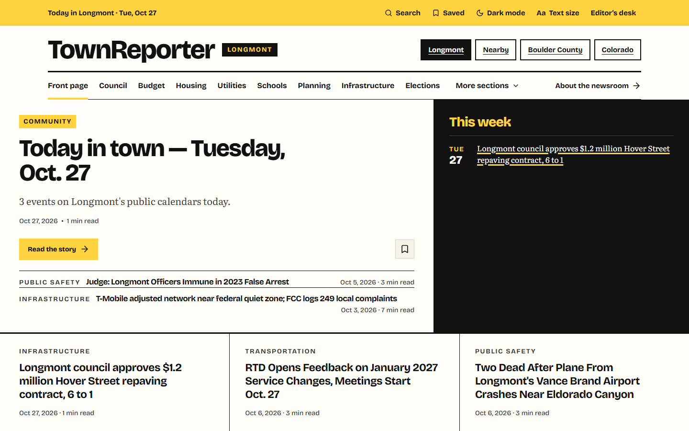
- A person presses PublishScan, draft and Dark Desk never print by themselves.
- It warns, never blocksEvery warning has an “anyway” button.
- MIT licensedFree to use, change and run.
- Self-hostedYour computer, your database, your archive.
- Local or cloud modelsUse your own hardware or a subscription you already have.
What it is
A paper in front. A working desk behind it.
Most local coverage dies in the packet. The agenda is public, the five-hour tape is public, the staff report is public, and almost nobody reads them. TownReporter reads them, keeps a copy when something disappears, and puts a reported draft in front of an editor who decides what prints.
Stories, sources shown
Reporting and unsigned editorials, plus owner-approved routine notices such as Today in town. Every story lists the records it used. Corrections are public and dated. There is an RSS feed, a searchable archive, dark mode and reading sizes.
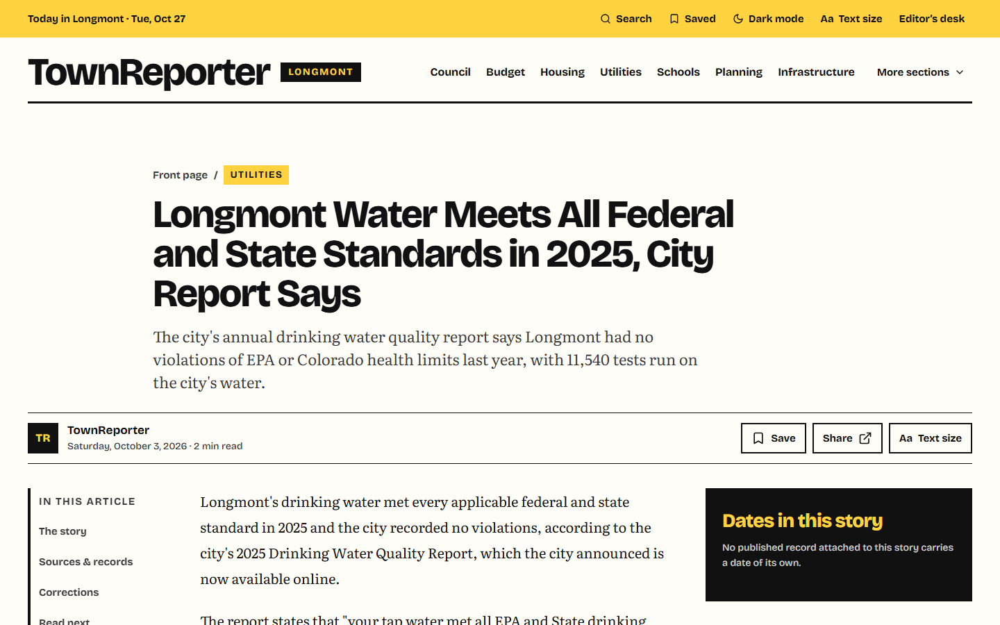
Today, Queue, Drafts, Published
Watch list and scan, a Queue of leads, a story workbench, Drafts, Opinion, Follow-ups, Dark Desk, Models, Server and Stats. The first account is the owner; others are invited by one-time link.
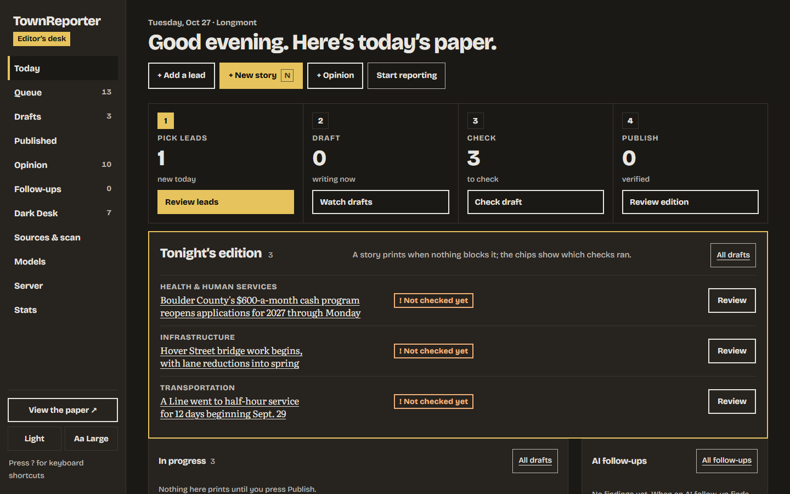
One editor
Keep a watch list of your city’s own sources. A scheduled scan files leads. You give a story direction, the AI drafts, you edit and publish.
Any town
No code edit or rebuild. The owner fills out Set up the paper: name, city, time zone, sources, meeting channels. The Longmont edition is the example, not a fence.
Your records, your rules
Open source under the MIT license. Your archive lives in your database. Reading the paper sends nothing to an outside host.
How it works
Watch, follow, preserve, then a human gate
The same six moves the paper describes on its own “How we report” page.
- WatchA list of civic sources: city site, council, agenda portal, schools, utility, meeting-video channels.
- DetectA scan fetches those pages, compares them with the last copy, and flags what changed, vanished, or failed to appear.
- FollowThe desk asks what the announcement leaves unexplained, then follows attachments, names, contracts and prior meetings.
- PreserveSignificant captures are stored. If a record later vanishes, the copy remains and the story says so.
- InvestigateDark Desk keeps competing hypotheses and open trails. It digs. It never prints.
- Write, then gateDrafts show their evidence. A person holds, kills or publishes ordinary reporting.
- SourcesWatch list, PrimeGov, YouTube
- ScanFetch, compare, file leads
- QueueLeads wait for you
- DraftDirection, then draft with its evidence
- CheckClaims judged, exceptions shown
- PublishA person presses it
- The paperSources and corrections public
Routine notices (library hours, recreation, community events, registration deadlines, waste collection) can print without an editor, but only from sources the owner approved and through fixed templates. The architecture drawings are in the manual.
How a meeting becomes a story
- Capture. The meeting recording is read and stored as an unchangeable transcript revision.
- A lead. Capture files a lead in the Queue with the transcript passages it used.
- Direction, then draft. You say which decision to cover; the draft cites the passages it actually used.
- Names are checked. A speaker nobody can confirm becomes “an unidentified speaker”.
- The gate. If a citation no longer matches the recording, the Publish bar warns you.
Captions are a map, not minutes. Packets and minutes are the official record.
Honest limits
- Models invent facts, misattribute quotes and mangle names, especially from auto-captions. The checks narrow what you must read; they do not replace editing.
- A vote count that is missing stays “unknown”, never zero.
- YouTube can rate-limit a capture; a later pass tries again.
- A city swap does not carry over the parsers written for Longmont’s own pages.
Inside the desk
What an editor actually uses
Screens from the running desk. Each links to the part of the manual that explains it.
Scan the sources, work the Queue
A daily scan reads your accepted sources and files leads. It reads the whole accepted pool, never-read sources first, and reports by name which sources it read, which are waiting and which were blocked. The Queue holds the leads: draft, hold, kill, or Undo, with keyboard shortcuts for each.
- Scan scopes: General, one reporting beat, or a custom set.
- Pages that refuse automated reads get one guarded browser try, then their RSS feed.
- Subscribed newsletters enter the archive through a mailbox you set up.
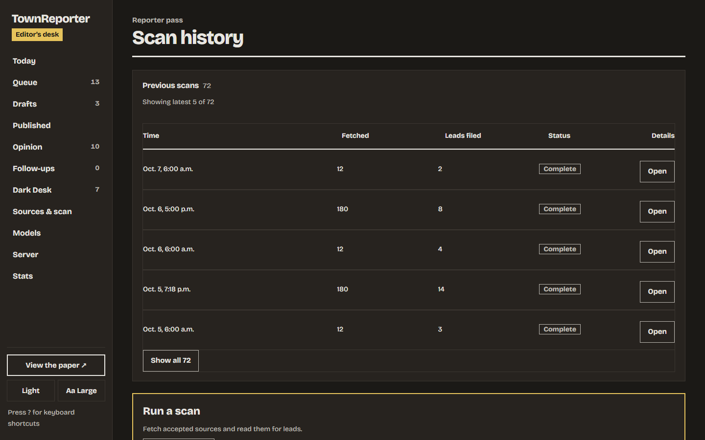
A Queue of leads, and a Drafts list
Every lead arrives with the page or transcript that produced it. Open one, give it a story direction, choose a model, and draft. Draft selected runs up to five leads on one named model. The Drafts list shows each draft’s state and readiness, and the model behind it.
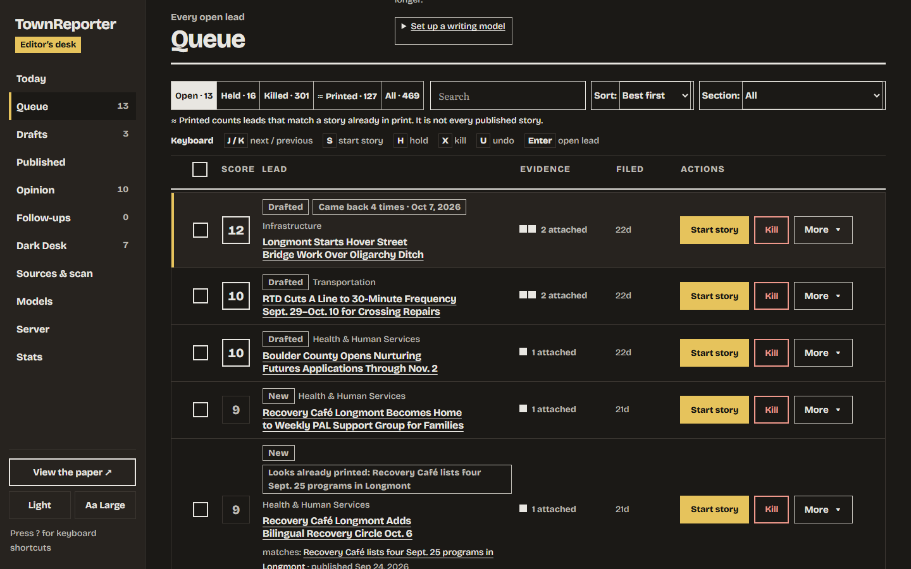
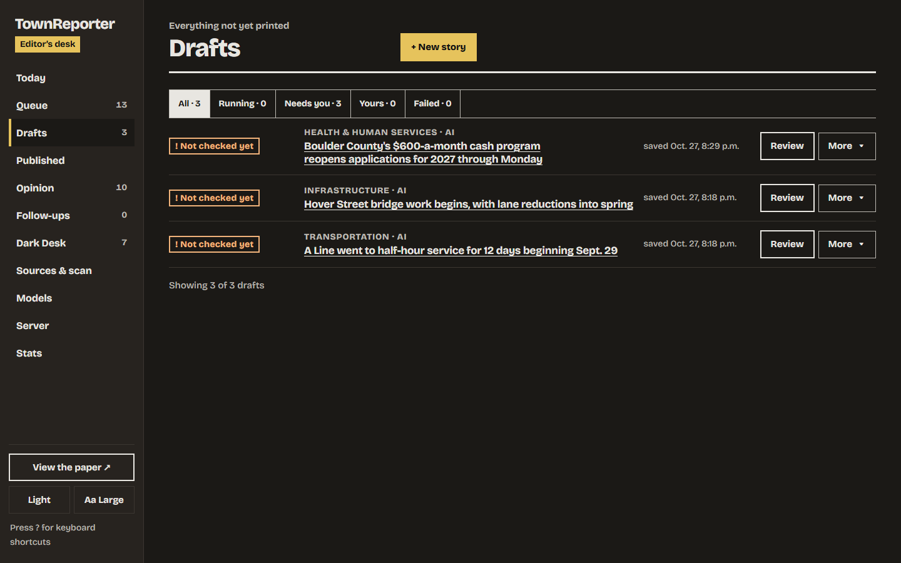
A story page that shows its evidence
The workbench keeps the lead, the draft, the checks and the sources side by side. The AI judges each claim against its pinned passage; you see the exceptions first and accept the rest with one button. The Publish bar lists every warning and reads Publish anyway in <section>. A person presses it.
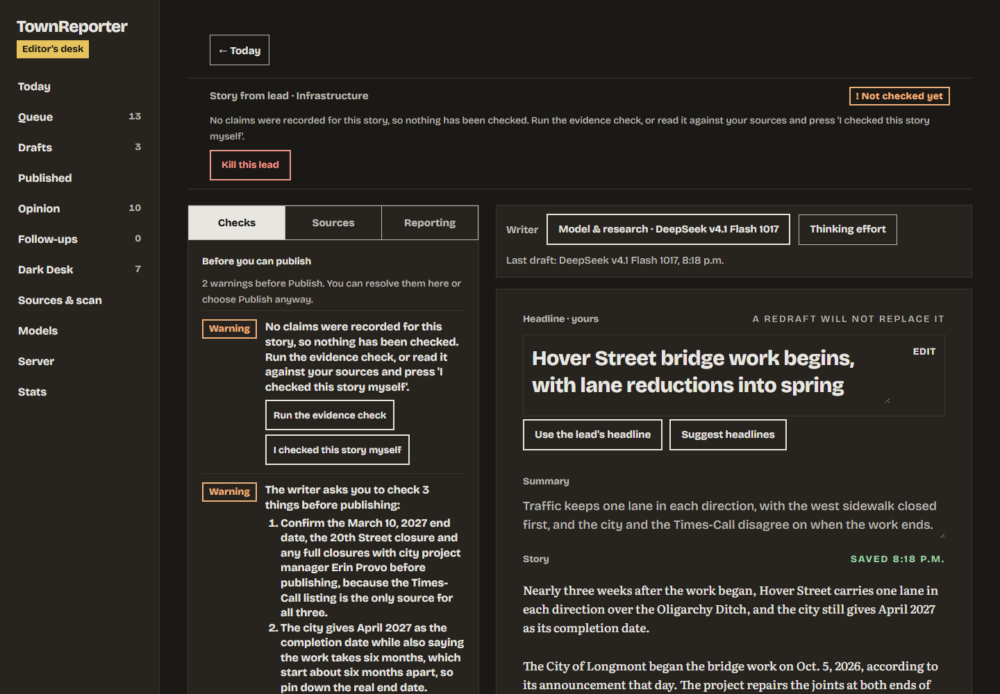
Find evidence, even by meaning
On any story, Find evidence searches the paper’s captured records by exact words and by Close in meaning. A third list, Our past stories close in meaning, finds earlier stories and uploaded files that relate to the one you are working on. It is on the editor desk only. Nothing it finds is added to a story’s text, and the public search box is unchanged.
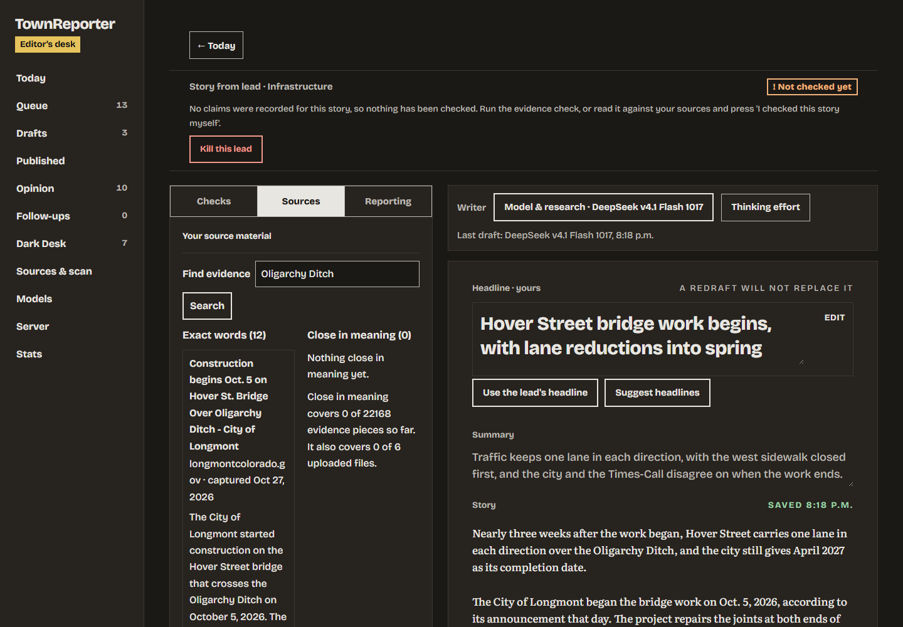
Today in town
From calendars the owner approved, the paper prints a time-ordered list of the day’s events: time, name, place, and “Free” or “Sign up” when the data has it. With six or more events it groups them under Morning, Afternoon and Evening. Every run says in plain words why any item needs review. Ordinary stories never take this path.
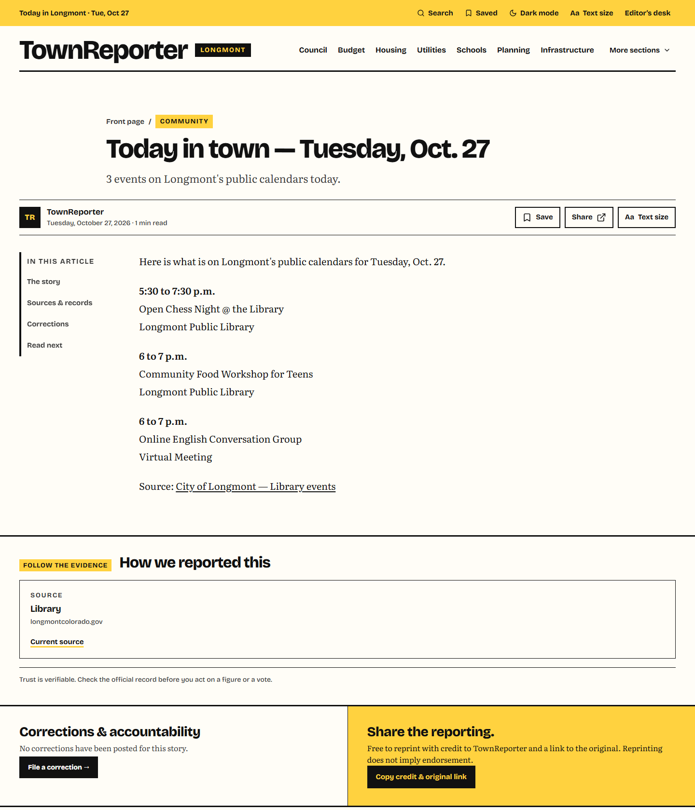
One model picker, on every AI screen
Wherever an AI does work, you see the same picker with the full list. Choose Automatic and the desk tries these in order, using the first that is ready, and moves only the unfinished call down the list if one fails:
- DeepSeek v4.1 Flash 1017 the paper’s default
- Local model whichever the computer has loaded
- Codex Sol 6.1 (balanced)
- Claude Sonnet 5.5
Gemini and the other Codex and Claude models stay available as named picks; Automatic never chooses Gemini. You can also add any OpenAI-compatible endpoint as a saved connection. After each draft the story page shows Last draft: <model>, <time>.
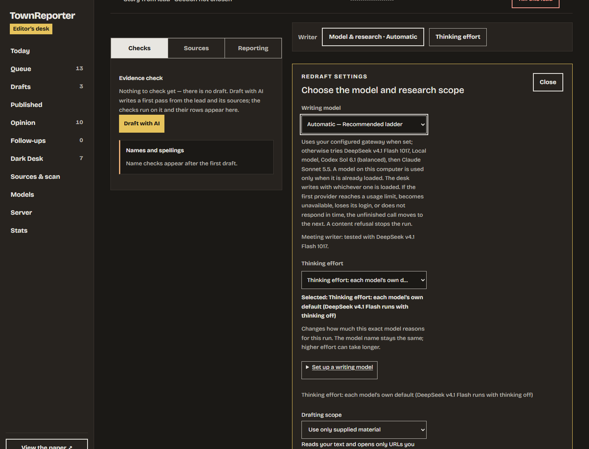
Dark Desk: it digs, it never prints
Point it at a person, a document, a link, a rumor or a gap. It keeps competing hypotheses and trails that reopen when new evidence appears, and every theory carries what would kill it. Two dials set the work: Dig (how far it chases) and Nerve (how speculative it may be). It has no publish button; a finding can be sent to the Queue.
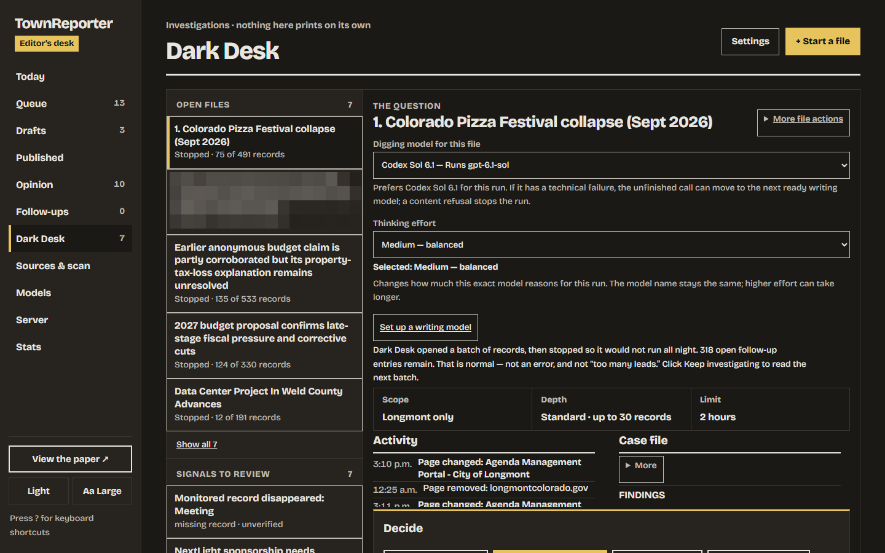
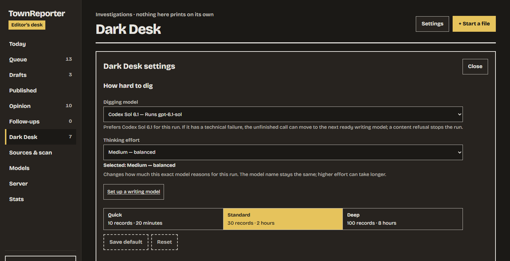
Opinion, in the paper’s own voice
Give it a subject, a sentence or a link, and it drafts an unsigned editorial from a voice file you keep on your own disk, with a claims-and-sources appendix. It stays a draft until you publish it.
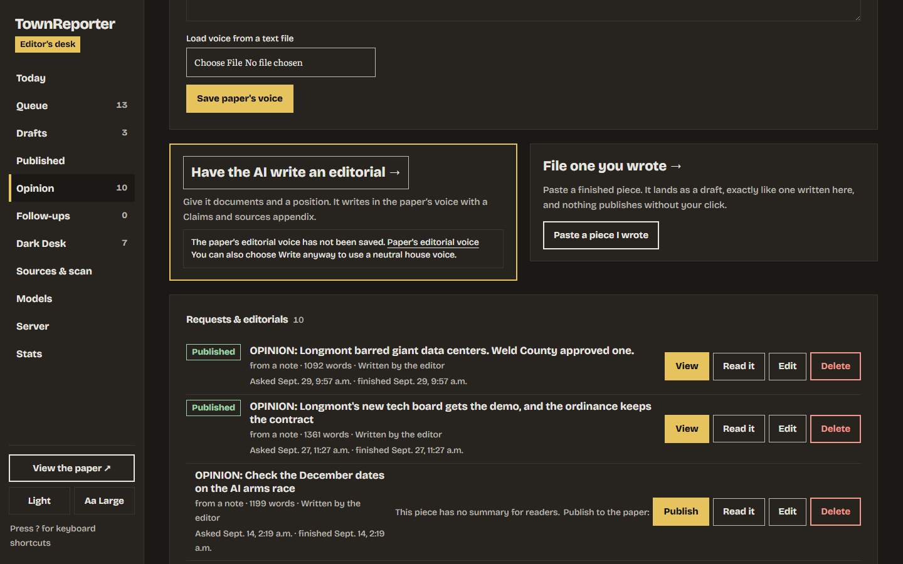
Run the paper: Server, Published, Paper setup
The Server page shows health, backups, models and the few buttons worth having. Published lists live stories and the public corrections. Paper setup is where an owner names the publication and the city, chooses the time zone and seeds the watch list.
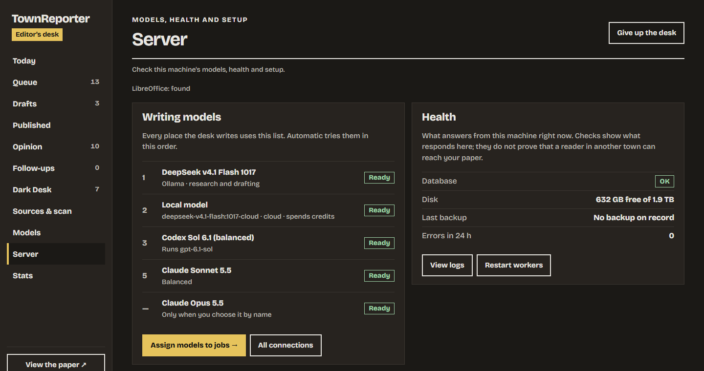
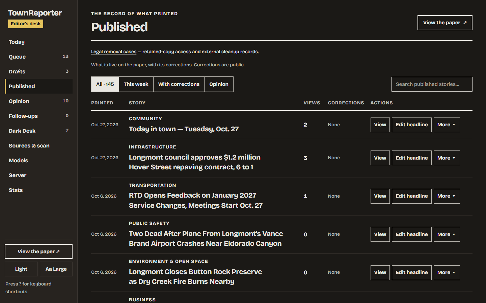
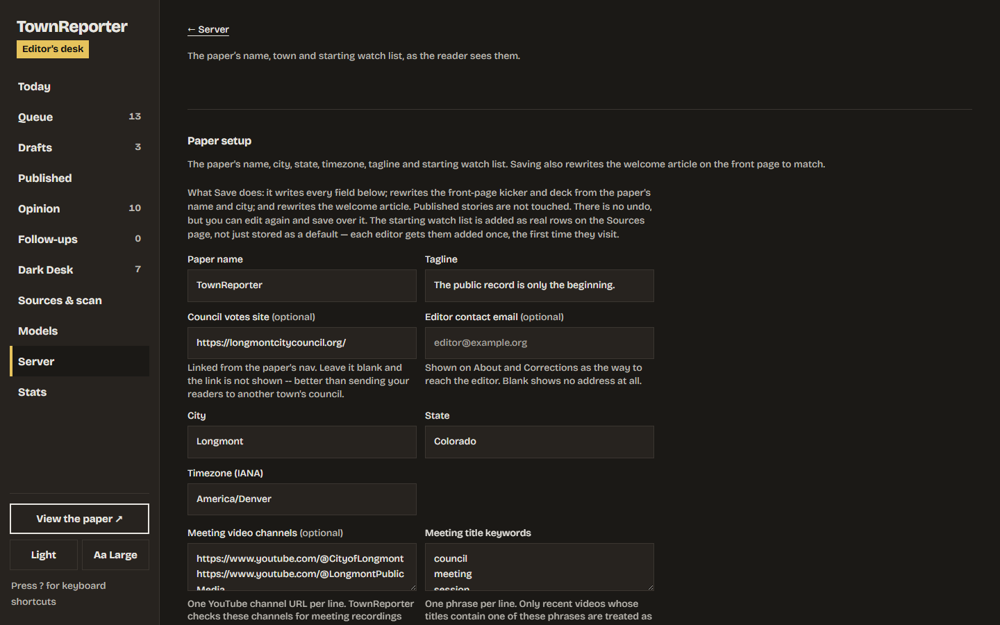
Version 0.6.86 · October 28, 2026
What is new
New in 0.6.86: a killed lead stays in its row with Undo, and a new Dark Desk round uses the file's picked model. The cards below describe the current release's main capabilities; the changelog has every change.
One picker, one ladder
The same full model list on every AI screen. Automatic walks DeepSeek, the Local model, Codex Sol 6.1 and Claude Sonnet 5.5. Gemini is a named pick only.
Find evidence
Search the paper’s evidence by exact words or by meaning, including its own past stories and uploaded files. Editor desk only.
Today in town
A time-ordered event list under Morning, Afternoon and Evening, with a named source, and a plain reason for every item that needs review.
Warns, never blocks
Publish anyway, Kill anyway, Hold anyway and Draft anyway, each written to an audit trail with who pressed it.
A rebuilt Dark Desk
A file selector, plain explanations, timed activity, a Decide menu, and Challenge the case as a saved job.
Evidence checks
The AI judges each claim; you review the exceptions. A draft with no recorded claims says “Not checked yet”.
More sources, more files
Subscribed newsletters, Excel, PowerPoint and LibreOffice files, RSS and Atom feeds, and sites that refuse automated reads.
A scan that reads it all
The daily scan reads the whole accepted source pool and reports sources read, waiting and blocked.
Steadier operations
Three-day backups on D:, a watchdog that waits for a slow start, and a server that says 503 until its database is current.
Trust
What you can count on, and what you cannot
The human gate
Ordinary stories reach the paper only after a person reviews them and presses Publish. A scan files leads. A draft fills a workbench. Dark Desk fills a file. None of those publish. Only routine notices from sources the owner approved, through fixed templates, can print without an editor.
Warns, never blocks
When a rule says an editor should stop, the desk shows the warning and a button that does what the editor asked, such as Publish anyway in <section>. The editor, the time, the warning and the target are written to the audit trail. A few true impossibilities, like an empty headline, stay refused.
Your data, your machine
MIT licensed and self-hosted. Reading the paper makes no request to any outside host: fonts are served from your machine and there is no analytics script. Working the desk does reach out: to the sites you watch, to the model you choose, and to public search. The manual lists exactly what leaves the machine.
Local or cloud models
Use a model on your own hardware (LM Studio, Ollama, llama.cpp), a signed-in Codex or Claude subscription, or any OpenAI-compatible endpoint. The AI CLIs run with shell, browser and plug-in tools switched off, and fetched pages are treated as evidence, never as instructions.
Install
Run it on your own computer
You bring an AI account or endpoint if you want drafts. Filing a lead and editing and publishing a story work without one.
Windows (recommended)
-
Open the
0.6.86 release
and download
TownReporter-0.6.86-windows-x64.zip. Do not use the “Source code” archive. - Extract it completely into a folder you will keep.
- Open Install TownReporter.cmd. It sets up a private database and the app.
- Open
http://127.0.0.1:4388, create the owner account with the one-time setup code the installer prints, and fill out Set up the paper. - Open Configure AI.cmd to choose a model, or use one you are already signed in to.
Each release also carries a .sha256 file for the ZIP and a .json
file naming its exact source commit.
From source (Windows, macOS, Linux)
# Node 22 or newer, then: git clone https://github.com/scottconverse/TownReporter.git cd TownReporter npm install npx playwright install chromium cp .env.example .env npm run dev # http://localhost:8080/login
With no DATABASE_URL it runs on an embedded database that is lost when
the process stops: fine for a look, not for a newsroom. Use Postgres to keep an archive.
GitHub Pages serves this landing page only. The newsroom is a Node application: run it on a computer or host that can run Node 22, Playwright Chromium and Postgres.
Documentation
Everything is written down
The manual has six parts, from a plain-English tour to the architecture drawings.